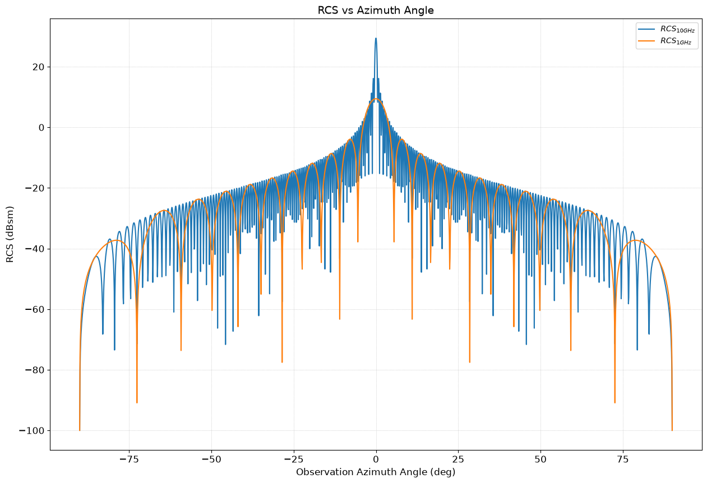
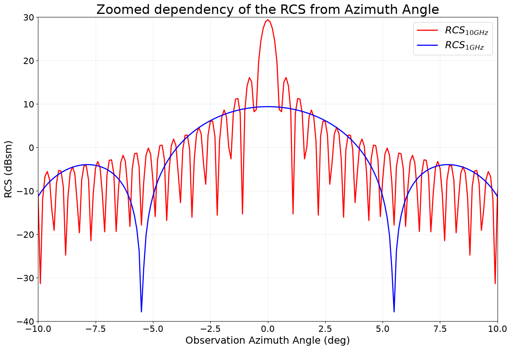

Radar Cross Section (RCS) of a Rectangular Plate#
For the monostatic case, when the radar trasmitter and receiver are located at the same position and use the same antenna (or very shortly separated antennas), the radar cross section (RCS) of the rectangle plate can be expressed as a function of radar wavelength \({\lambda}\) and wavenumber \(k = 2 \pi / \lambda\), horizontal size of the target \(a\), vertical size of the rectangle \(b\), and the incident/observation angles in azimuth \({\theta_i}\) and in elevation \({\phi_i}\):
To study how this dependence look like, we set specific paramentes and run the following codes
Import necessary functions:
from numpy import radians, sin, cos, sinc, log10, linspace, array
from scipy.constants import c, pi
import numpy as np
Implement the above presented equation as a function of input paramenters:
Set the operating frequency (Hz), the plate width (m), the plate length (m), the incident angle theta (degrees) and the observation angle (phi) (degrees)
frequency1 = 1e9 # 1 GHz
frequency2 = 10e9 # 10 GHz
width = 0.50 # meters
height = 0.50 # meters
observation_phi = array([0.0]) # elevation 0 degrees
observation_theta = linspace(-90, 90, 1801) # azimuth from -90 to 90 degrees
Calculate the radar cross section (m^2) of the rectangular plate
rcs1 = radar_cross_section(frequency1, width, height, observation_theta, observation_phi)
rcs2 = radar_cross_section(frequency2, width, height, observation_theta, observation_phi)
rcs1dB=10.0 * log10(rcs1 + 1e-10)
rcs2dB=10.0 * log10(rcs2 + 1e-10)
print(f"The maximum RCS of the rectangle plate {width}x{height} m = {width*height:.2f} m^2 is in the normal to plate's direction and equals to")
print(f" - at 1 GHz equals to {np.max(rcs1):.2f} m")
print(f" - at 10 GHz equals to {np.max(rcs2):.2f} m")
The maximum RCS of the rectangle plate 0.5x0.5 m = 0.25 m^2 is in the normal to plate's direction and equals to
- at 1 GHz equals to 8.74 m
- at 10 GHz equals to 873.87 m
Display the azimuthal dependency of the radar cross section (dBsm) of the rectangular plate#
<matplotlib.legend.Legend at 0x136a30980>

Zoomed plot of the sector around \(0^{\circ}\) azimuth#
